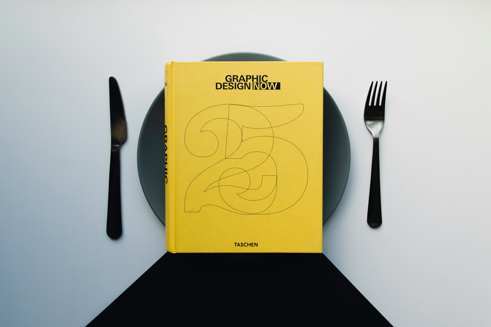

A graphic design portfolio is a creative collection that showcases a designer’s best work, skills, and unique style. It highlights projects that demonstrate an understanding of design principles such as typography, color, composition, and visual hierarchy. A well-organized portfolio tells a story about the designer’s process—from concept development to final execution—and reflects their ability to solve visual problems effectively. In the field of graphic design, a portfolio is more than just a display of finished pieces; it’s a visual résumé that communicates creativity, technical skill, and attention to detail. Designers often include a range of projects such as logos, posters, packaging, web design, and branding systems to show versatility. Maintaining a clear layout, consistent typefaces, and balanced visuals helps create a strong first impression. An effective portfolio not only demonstrates design ability but also personality. It should feel cohesive and thoughtfully curated, allowing potential clients or employers to understand the designer’s approach and strengths. Whether presented digitally or in print, a strong portfolio remains one of the most essential tools for success in the graphic design industry.